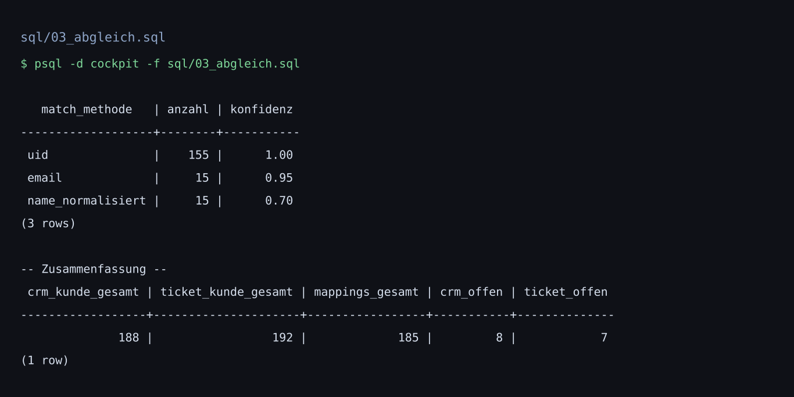
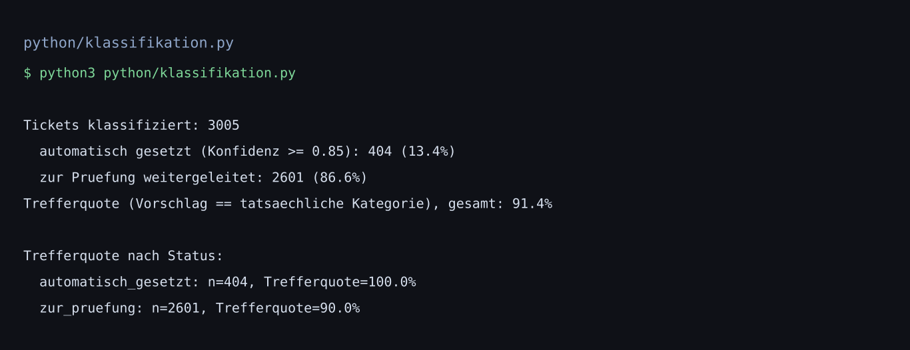
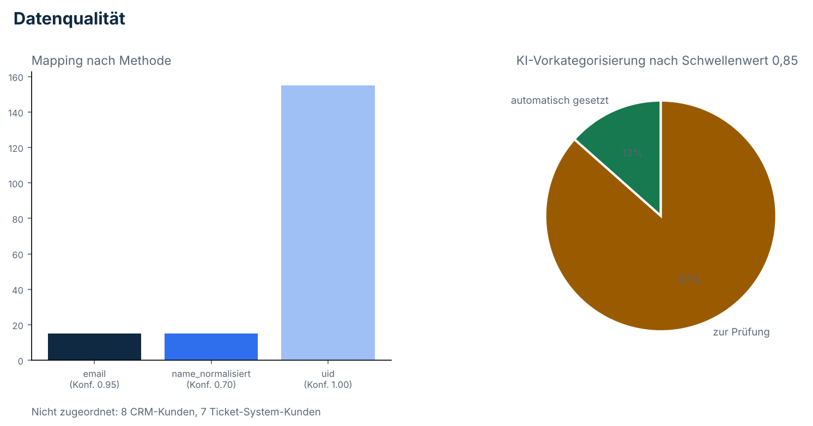
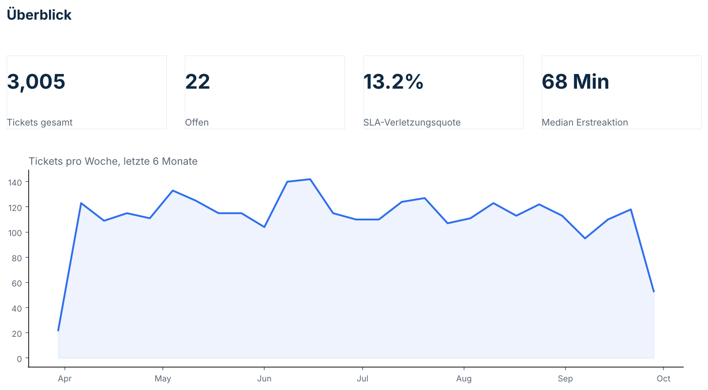
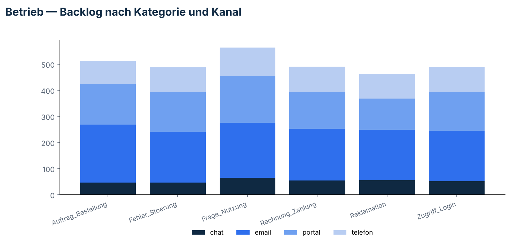

Overview
Two source systems track the same customers under different IDs — a CRM export and a ticketing tool's own customer list — with no shared key and inconsistent formatting between them. This project reconciles the two with a tiered, confidence-scored match instead of a silent guess, and applies the same principle — automate what's safe, route what isn't to a person — to ticket categorization and daily SLA monitoring.
Built against a synthetic dataset modeled on a real support operation: ~200 customers (deliberately messy — formatting noise, a few customers that only exist in one system, a few duplicated by accident) and 3,000+ tickets over 6 months.
185 of 192 customers reconciled, 91.4% categorization accuracy
Customer mapping
The two systems share no key. Matching runs in tiers — the strongest signal first, each next tier only considering customers nobody has claimed yet — and every match is recorded with the method that produced it and a confidence score, so nothing downstream treats a weak match the same as a certain one.
| Tier | Method | Confidence | Matches |
|---|---|---|---|
| 1 | UID, normalized (strips spaces/hyphens) | 1.00 | 155 |
| 2 | Email, lowercased | 0.95 | 15 |
| 3 | Company name, normalized (legal-form suffixes, punctuation, "&"/"und") | 0.70 | 15 |
| — | Left unmatched, not guessed | — | 8 CRM-only, 7 ticket-only |

The reconciliation report turns the unmatched customers into an actual reviewable list, not just a count.
Ticket pre-categorization with a confidence threshold
Each ticket's free text gets a proposed category and priority, with a confidence score. At or above 0.85, the proposal is applied automatically; below it, the ticket is routed to manual review instead. Every proposal is schema-validated before it's trusted at all — nothing is silently guessed.

13.4% of tickets clear the threshold for automatic categorization; the rest are routed to review.
How this is actually implemented. The original design calls for an LLM call — a prompt with the fixed category list, asking for a category and a confidence score back as JSON. This project runs in an environment with no LLM API key available to a standalone script, so the classifier implements the same architecture — a validated {category, priority, confidence} response, the same 0.85 threshold, the same routing to a review queue — using a deterministic keyword-weighted scorer instead of an actual model call. The result is written to the database as model "regelbasiert-v1", specifically so it's never later misread as a real model call. Swapping in a real LLM means replacing one function; everything downstream — validation, the threshold, the review queue — stays the same.
The auto-apply rate (13.4%) is low relative to overall accuracy (91.4%) because the confidence formula is deliberately conservative — it only clears 0.85 when a ticket's text matches several category-specific keywords with no close competing category. That's the real, unflattered number; see What's next.
Data quality & automation
Incoming ticket records are validated independently — a broken record (missing field, unknown customer, bad date, invalid priority, even malformed JSON) is logged with a reason and does not stop the rest of the batch from loading. Every ingest run is logged, so what happened on any given day is a query, not a guess.

Mapping and classification outcomes, rendered directly from the live PostgreSQL views.
A daily check queries open tickets within 4 hours of SLA breach, plus anything rejected by the last ingest run or still sitting in manual review — the logic a scheduled Power Automate or n8n flow would run. Neither tool was reachable from the environment this was built in, so the check ships as the exact query-and-condition logic that flow would use, runnable standalone or from cron; swapping a print statement for a Teams/email webhook is the only change needed to make it a real scheduled flow. The dashboards below are the same honest substitute for Power BI or Looker Studio — rendered straight from the same views, with real numbers, because neither BI tool was reachable either.

Overview.

Operations — volume by category and channel.
"SLA counts came out doubled"
While testing the mapping step, one customer's ticket count in the customer-360 view came out at 38 — double the real 19. Reproducing it: a mapping table without a uniqueness constraint on (CRM customer, ticket-system customer) accepts the same match twice if the matching pass ever runs twice — for example, after a scheduler retries a timed-out job. The join that reports ticket counts per customer then counts the ticket twice for each duplicated mapping row.
A side-finding while fixing it: the constraint can't just be added back once duplicates already exist — ALTER TABLE ... ADD CONSTRAINT UNIQUE fails outright until the duplicates are removed first. The fix was two parts: deduplicate existing rows keeping the earliest, then guard every insert with ON CONFLICT DO NOTHING so a second run is a no-op instead of a duplicate. Full reproduction steps and SQL are in the repo's incident writeup.
Limitations
The dataset is synthetic, generated to be messy in the specific ways described above — a real system would surface failure modes this one doesn't model. The classification step is a documented stand-in for an LLM call, not a model call itself (see Classification). The daily automation and the dashboards are the query logic and SQL a real scheduled flow and a real BI tool would use, run locally rather than through Power Automate/n8n or Power BI/Looker Studio, since none of those were reachable from the environment this was built in.
What's next
Compare the keyword classifier against a real LLM call on the same tickets, to see whether accuracy and the auto-apply rate both improve or just one does. Wire the SLA/data-quality check to an actual Power Automate or n8n flow, and the dashboards to Power BI or Looker Studio, against the same PostgreSQL database. Generate a second, larger synthetic dataset with different seeds to check the mapping tiers and the SLA breach rate hold up outside the one dataset they were tuned against.